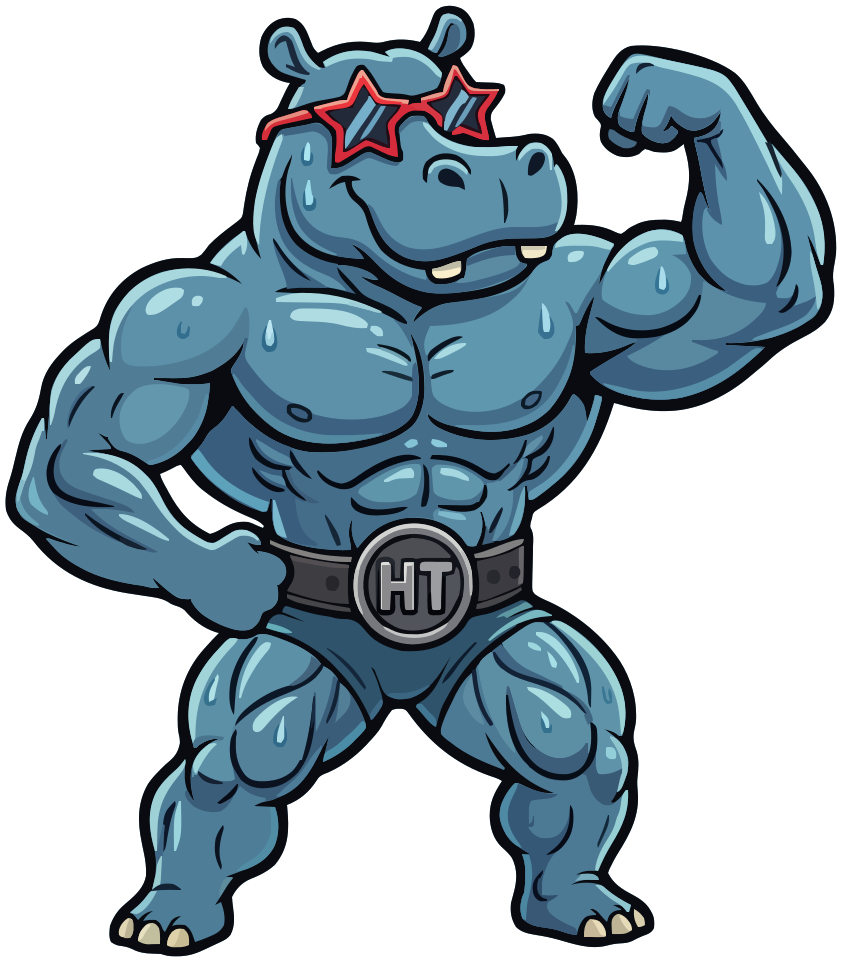

Stay in control of your gains and your data.
-
Deine Daten bleiben auf deinem Gerät Kein Konto, keine Anmeldung, kein Netzzugriff. Was du einträgst, verlässt das iPhone nur, wenn du selbst ein Backup exportierst.Your data stays on your device No account, no sign-in, no network access. What you enter leaves the iPhone only when you export a backup yourself.
-
Kostenlos und ohne Werbung Kein Abo, keine Käufe in der App, keine Werbung.Free and without ads No subscription, no in-app purchases, no ads.
-
Open Source zur Veröffentlichung Mit dem Erscheinen im App Store wird der Quellcode offengelegt.Open source at release When the app comes out on the App Store, its source code will be published.
And because a hippo never skips leg day.

Keine Funktion passt zu dieser Suche.No feature matches this search.
StartseiteHome screen
Alle Workouts, die laufende Woche und ein Jahr Training auf einen Blick.All workouts, the current week and a year of training at a glance.
Workout-ListeWorkout list3 Bilder3 images
Die Startseite listet alle Workouts, das neueste oben. „This Week“ zählt Workouts und Sätze der laufenden Woche; ein Satz zählt erst, wenn etwas darin steht.
- Das Menü neben „History“ filtert nach Zeitraum: Last Week, Last Month oder eigener Zeitraum.
- Langes Drücken auf ein Workout und „Copy Workout“: eine Kopie mit dem Datum von heute, als Vorlage.
- Nach links wischen löscht ein Workout.
The home screen lists all workouts, newest first. “This Week” counts the workouts and sets of the current week; a set only counts once something is in it.
- The menu next to “History” filters by period: Last Week, Last Month or a custom range.
- Long-press a workout and pick “Copy Workout”: a copy with today’s date, as a template.
- Swiping left deletes a workout.
AktivitätsgraphActivity graph2 Bilder2 images
Jede Spalte ist eine Woche, jede Zeile ein Wochentag; je mehr Sätze, desto kräftiger die Farbe. Jede Karte zählt eine Kategorie, zu Beginn Strength und Cardio. Über den Titel wischen blättert zur nächsten, das Menü ⋯ wählt die Kategorie und fügt Karten hinzu. Graph, Wochentage und Legende lassen sich in den Einstellungen ausschalten.
Each column is a week, each row a weekday; the more sets, the stronger the color. Each card counts one category, Strength and Cardio to begin with. Swiping across the title turns to the next, the ⋯ menu picks the category and adds cards. The graph, weekdays and legend can be turned off in Settings.
Workout-DetailseiteWorkout detail page2 Bilder2 images
Ein Tipp auf ein Workout zeigt alles, was darin steht: jede Übung mit ihren Sätzen und ihrer Anstrengung, Notizen, Supersätze als ein Block, links und rechts getrennt. Übungen mit eigenen Feldern stehen als Tabelle. Oben rechts führen „Edit“ in den Editor und der Teilen-Knopf zum PDF-Bericht.
Tapping a workout shows everything in it: each exercise with its sets and effort, notes, supersets as one block, left and right apart. Exercises with custom fields read as a table. At the top right, “Edit” leads to the editor and the share button to the PDF report.
Muskelgruppen und HeatmapMuscle groups and heat map
Welche Muskelgruppen wie viel abbekommen, und was zu kurz kommt.How much each muscle group gets, and what falls short.
Muskel-HeatmapMuscle heat map2 Bilder2 images
Das Figur-Symbol neben dem Zahnrad öffnet „Muscle Groups“. Jede Muskelgruppe ist nach ihren Sätzen im gewählten Zeitraum eingefärbt, von Grün für wenig bis Lila für die meisttrainierte; grau heißt nicht trainiert. Ein Satz zählt voll für die Hauptmuskeln seiner Übung und halb für die Nebenmuskeln.
Der Regler wählt den Zeitraum, das Menü oben rechts die Kategorien (zu Beginn nur Strength). Ein Tipp auf einen Muskel öffnet seine Historie. Männliche oder weibliche Figur: Settings → „Gender“.
Die Figur bleibt grau? Eine Übung ohne Muskelgruppe färbt nichts. Katalogübungen bringen ihre mit; eigenen Übungen gibt man sie im Editor.
The figure icon next to the gear opens “Muscle Groups”. Each muscle group is colored by its sets in the selected period, from green for few to purple for the most trained; gray means not trained. A set counts in full for its exercise’s main muscles and half for the secondary ones.
The slider picks the period, the menu at the top right the categories (Strength only at first). Tapping a muscle opens its history. Male or female figure: Settings → “Gender”.
Figure stays gray? An exercise without a muscle group colors nothing. Catalog exercises bring theirs; give your own exercises theirs in the editor.
Sätze je MuskelgruppeSets per muscle group2 Bilder2 images
Unter der Figur stehen alle Muskelgruppen mit ihren Sätzen im Zeitraum und dem Tag, an dem sie zuletzt dran waren. Ein Tipp öffnet die Historie der Gruppe: die Sätze der letzten zwölf Wochen und jedes Workout, das sie trainiert hat. Sätze, in denen die Gruppe nur mithilft, stehen getrennt und grau.
Below the figure, every muscle group is listed with its sets in the period and the day it was last trained. A tap opens the group’s history: the sets of the last twelve weeks and every workout that trained it. Sets where the group only helps are shown apart, in gray.
Workout erfassenLogging a workout
Der Editor, in dem ein Training entsteht.The editor where a session takes shape.
Workout starten und Sätze erfassenStart a workout and log sets1 Bild1 image
„Start Workout“ öffnet den Editor. Name und Datum sind optional bzw. stehen auf jetzt; über die Datumszeile lässt sich ein Training nachtragen.
„Add Set“ legt einen Satz an. In der Satzzeile kopiert das Doppel-Symbol den Satz, das Minus löscht ihn, am Griff rechts lässt er sich verschieben. Unter dem Namen steht, was beim letzten Mal geloggt wurde; ein Tipp darauf oder auf das Uhr-Symbol öffnet die ganze Historie der Übung.
“Start Workout” opens the editor. The name is optional and the date is set to now; the date row lets you log a past session.
“Add Set” adds a set. In the set row, the double icon copies the set, the minus deletes it, and the handle on the right moves it. Under the name is what you logged last time; tapping it or the clock icon opens the exercise’s full history.
Übung hinzufügenAdd an exercise2 Bilder2 images
„Add Exercise“ öffnet die Auswahl: Katalogübungen und eigene unter ihren Muskelgruppen, jede Katalogübung mit Piktogramm. Ein Tipp auf eine Gruppe klappt sie auf, das Suchfeld unten findet jede Übung. Gibt es einen Namen noch nicht, lässt er sich unter „New“ direkt anlegen.
Bitte wo immer möglich Katalogübungen nehmen: Sie bringen Muskelgruppen und Seitenform mit, und die Heatmap rechnet richtig.
“Add Exercise” opens the picker: catalog exercises and your own under their muscle groups, each catalog exercise with its pictogram. Tapping a group unfolds it, the search field at the bottom finds any exercise. A name that doesn’t exist yet can be created right there under “New”.
Please pick catalog exercises wherever you can: they come with muscle groups and sides, and the heat map counts them right.
Anstrengung bewertenRate effort2 Bilder2 images
Die Balken am Ende einer Satzzeile zeigen, wie schwer der Satz war; ein Tipp öffnet die Auswahl. Statt „Easy, Normal, Hard“ geht auch „Reps in Reserve (RIR)“, die Wiederholungen, die noch drin waren, oder gar keine Bewertung. Die Voreinstellung steht in den Einstellungen unter „Rate Effort“, pro Übung im Workout im Menü ihrer Kopfzeile (langes Drücken).
The bars at the end of a set row show how hard the set was; a tap opens the choice. Instead of “Easy, Normal, Hard” there is “Reps in Reserve (RIR)”, the reps you had left, or no rating at all. The default is in Settings under “Rate Effort”, per exercise in a workout in its header’s menu (long press).
Bilateral und unilateralBilateral and unilateral2 Bilder2 images
Jede Übung ist bilateral oder unilateral. Gibt es eine Übung in beiden Formen, trägt die unilaterale „(Unilateral)“ im Namen, etwa Leg Press (Unilateral).
Eine unilaterale Übung wird im Workout auf eine von zwei Arten geloggt: „Same Weight“, eine Satzliste für beide Seiten, oder „Log L/R“, links und rechts mit eigenen Sätzen. Ein Tipp auf das Abzeichen neben dem Namen wechselt.
Every exercise is bilateral or unilateral. Where an exercise comes in both forms, the unilateral one carries “(Unilateral)” in its name, like Leg Press (Unilateral).
In a workout, a unilateral exercise is logged one of two ways: “Same Weight”, one list of sets for both sides, or “Log L/R”, left and right with their own sets. Tapping the badge next to the name switches.
Mit UnterstützungAssisted2 Bilder2 images
Dip, Pull-Up und Chin-Up lassen sich „Machine Assisted“ loggen: Statt „Weight“ steht dann „Assist“ im Satz, die Hilfe der Maschine. Weniger Hilfe ist Fortschritt, im Fortschrittsgraphen läuft sie deshalb unter null.
Dip, Pull-Up and Chin-Up can be logged “Machine Assisted”: the set then holds “Assist”, the machine’s help, instead of “Weight”. Less help is progress, so the progress graph shows it below zero.
SupersätzeSupersets1 Bild1 image
„Add Exercise“ und dann „Superset“ wählt zwei Übungen, die erste wird A, die zweite B. Die Karte zeigt die Sätze in der Reihenfolge, in der sie gemacht wurden; „Add A“ und „Add B“ loggen den nächsten. Zwei getrennt geloggte Übungen verbindet langes Drücken auf eine und „Convert to Superset…“.
“Add Exercise” and then “Superset” picks two exercises; the first becomes A, the second B. The card lists the sets in the order they were done; “Add A” and “Add B” log the next one. To link two exercises logged separately, long-press one and pick “Convert to Superset…”.
Notizen, Ordnen, EntfernenNotes, order, removing2 Bilder2 images
- Notizen: das Notiz-Symbol an einer Übung, unten im Editor das Feld für das ganze Workout.
- Ein Tipp auf den Namen klappt eine Übung ein; „Reorder“ ändert die Reihenfolge.
- Langes Drücken auf die Kopfzeile: „Delete Exercise“, Bewertungsskala, „Convert to Superset…“.
- „Cancel“ fragt nach, wenn sich etwas geändert hat.
- Notes: the note icon on an exercise, and at the bottom of the editor the field for the whole workout.
- Tapping a name collapses an exercise; “Reorder” changes the order.
- Long-press the header: “Delete Exercise”, rating scale, “Convert to Superset…”.
- “Cancel” asks first if anything changed.
Übungshistorie und FortschrittExercise history and progress1 Bild1 image
Das Uhr-Symbol an einer Übung öffnet ihre Historie: jedes Workout, in dem sie vorkam. Darüber zeigt ein Graph einen Punkt pro Workout, wahlweise „Est. 1RM“ (geschätztes Maximum für eine Wiederholung), „Max Weight“, „Volume“ oder „Most Reps“. Ein Tipp auf einen Punkt zeigt sein Workout.
The clock icon on an exercise opens its history: every workout it appeared in. Above it, a graph shows one point per workout, either “Est. 1RM” (estimated one-rep max), “Max Weight”, “Volume” or “Most Reps”. Tapping a point shows its workout.
PDF-BerichtPDF report
Ein Workout als Datei, etwa für den Coach.A workout as a file, for example for your coach.
PDF-BerichtPDF report2 Bilder2 images
Der Teilen-Knopf auf der Detailseite öffnet „Share Workout“, „Export PDF“ erzeugt die Datei. Der Bericht zeigt Sätze, Volumen, Anstrengung und Notizen; Übungen ohne Gewicht und Wiederholungen fehlen vorerst und werden auf der letzten Seite genannt.
The share button on the detail page opens “Share Workout”, and “Export PDF” creates the file. The report shows sets, volume, effort and notes; exercises without weight and reps are left out for now and named on the last page.
ÜbungenExercises
Settings → Exercises: der Katalog und die eigenen Übungen.Settings → Exercises: the catalog and your own exercises.
ÜbungskatalogExercise catalog3 Bilder3 images
Die App bringt einen Katalog mit: jede Übung mit Haupt- und Nebenmuskeln, Seitenform und einem Piktogramm von Start und Ende der Bewegung. Katalogübungen lassen sich nicht ändern; „Copy to My Exercises“ macht eine eigene Übung daraus.
Eigene Übungen tragen das Abzeichen „User defined“. „Review My Exercises“ zeigt sie neben dem Katalog: Passt eine zu einer Katalogübung, zieht sie mit allen Workouts dorthin um. Sonst bleibt sie mit „Keep as Mine“ die eigene.
The app comes with a catalog: each exercise with main and secondary muscles, its sides and a pictogram of the start and end of the movement. Catalog exercises can’t be changed; “Copy to My Exercises” makes one of your own from one.
Your own exercises carry the badge “User defined”. “Review My Exercises” sets them beside the catalog: if one matches a catalog exercise, it moves there with all its workouts. Otherwise “Keep as Mine” keeps it yours.
Eigene ÜbungenYour own exercises2 Bilder2 images
Unten in der Übungsliste legt „Add Weight & Reps Exercise“ eine Übung mit Gewicht und Wiederholungen an, „New Exercise with Fields…“ eine mit eigenen Feldern. Ein Tipp auf eine eigene Übung öffnet ihren Editor: Name, bilateral oder unilateral, Kategorie, Haupt- und Nebenmuskeln. Eine Umbenennung zieht durch die ganze Historie.
Nach links wischen löscht eine Übung; was mit ihr geloggt wurde, bleibt. „Merge Two Exercises…“ führt zwei Namen zusammen, die dieselbe Übung meinen.
At the bottom of the exercise list, “Add Weight & Reps Exercise” creates an exercise with weight and reps, “New Exercise with Fields…” one with custom fields. Tapping one of your own opens its editor: name, bilateral or unilateral, category, main and secondary muscles. A rename follows the exercise through its whole history.
Swiping left deletes an exercise; whatever was logged with it stays. “Merge Two Exercises…” joins two names that mean the same exercise.
Eigene FelderCustom fields1 Bild1 image
Eine Übung kann bis zu sechs Felder loggen: Gewicht, Wiederholungen und eigene vom Typ Text, Zahl oder Dauer, etwa fürs Rudern Dauer, Distanz und Watt. Ohne „Track Sets“ werden die Felder einmal pro Workout ausgefüllt statt in Sätzen. Ändert man die Felder einer schon geloggten Übung, sagt der Editor vorher, was mit den alten Workouts passiert.
An exercise can log up to six fields: weight, reps and your own of type text, number or duration, such as duration, distance and watts for rowing. Without “Track Sets” the fields are filled in once per workout instead of in sets. Changing the fields of an exercise already logged, the editor says beforehand what happens to the old workouts.
BackupBackup
Alles bleibt auf dem Gerät. Ein Backup ist eine Datei, die man selbst sichert.Everything stays on the device. A backup is a file you save yourself.
Backup exportierenExport a backup1 Bild1 image
„Backup“ oben links, dann „Export Backup“, und über den Dialog von iOS sichern, etwa in der Dateien-App. Wer nur die Übungen weitergeben will, schaltet „Workouts“ aus.
“Backup” at the top left, then “Export Backup”, and save through the iOS dialog, for example to the Files app. To pass on only the exercises, switch off “Workouts”.
Backup importierenImport a backup1 Bild1 image
„Backup“, „Import Backup“ und die Datei wählen. „Add“ fügt hinzu und überspringt, was schon da ist; „Replace All“ löscht vorher die vorhandenen Workouts. Weicht eine Übung in der Datei von der eigenen ab, fragt die App nach, statt still zu entscheiden.
Backups von Build 20 und älter lassen sich nicht mehr lesen. Hilfe: hippotrophy@gmail.com.
“Backup”, “Import Backup” and choose the file. “Add” adds and skips what is already there; “Replace All” first deletes the existing workouts. If an exercise in the file differs from yours, the app asks instead of deciding silently.
Backups from build 20 or earlier can no longer be read. Help: hippotrophy@gmail.com.
Einstellungen und HilfeSettings and help
Einheit, Schalter und Antworten.Unit, switches and answers.
EinstellungenSettings2 Bilder2 images
Das Zahnrad oben links öffnet die Einstellungen: die Übungsliste, Kilogramm oder Pfund, Aktivitätsgraph, die Figur der Heatmap und die Schalter für den Editor. Unter jedem Abschnitt steht, was er bewirkt. Gespeichert wird immer in Kilogramm; die Einheit bestimmt nur Eingabe und Anzeige.
The gear at the top left opens Settings: the exercise list, kilograms or pounds, the activity graph, the heat map figure and the switches for the editor. Below each section it says what it does. Weights are always stored in kilograms; the unit only decides entry and display.
What's New und FAQWhat's New and FAQ2 Bilder2 images
Nach einem Update zeigt die App einmal, was neu ist; wer Builds übersprungen hat, sieht alle verpassten. Settings → What's New zeigt alles noch einmal, dieselben Release Notes stehen am Ende dieser Seite. Settings → FAQ beantwortet, worauf man beim Herumtippen nicht kommt.
After an update, the app shows once what is new; skipped builds are all shown. Settings → What's New shows it all again, and the same release notes are at the end of this page. Settings → FAQ answers what you won’t find by tapping around.
Release Notes
Was jeder Build gebracht hat, der neueste oben. Die Release Notes gibt es nur auf Englisch.What each build brought, newest first.
Build 2323. Oktober 2026October 23, 2026
Changes
- Review My Exercises now comes up for every exercise of your own that could move to the catalog, not only for those with a suggestion: you can search the catalog yourself, or keep it as yours. After an import, it follows “Bilateral or Unilateral?” right away instead of waiting for the next launch.
Build 2223. Oktober 2026October 23, 2026
Assisted Dips and Pull-Ups. Dip, Pull-Up and Chin-Up can now be logged with the help of an assist machine.
- Tap the “Unassisted” capsule next to the name and pick Machine Assisted. The weight field becomes Assist, for the kilograms the machine takes off.
- The progress graph counts help below zero: 25 kg of help is −25, bodyweight is 0, added weight goes above. Less help reads as progress.
- Your own exercises can offer it too: Can Be Assisted in the exercise editor.
Also in this build
- The catalog has new exercises: High Row Machine and Low Row Machine, each with a unilateral form, and Smith Machine Shoulder Press.
- Rows no longer count the shoulders as a secondary muscle: the heat map now credits them to the back, biceps and traps only. The same goes for the pulldowns.
- Exercises of your own that were never logged — no set, no note — were removed once more. “Bilateral or Unilateral?” no longer asks about one, and an exercise leaving the catalog goes with it if you never logged it.
Build 2122. Oktober 2026October 22, 2026
Exercise Catalog. HippoTrophy now comes with a catalog of exercises.
- Please use catalog exercises wherever you can: the heat map and more depend on exercises being set up right, and catalog exercises come set up.
- I keep adding to the catalog. You're more than welcome to suggest exercises for it.
Bilateral and Unilateral. Every exercise is now either bilateral or unilateral.
- If an exercise has a unilateral version, pick that one for one side at a time. It carries “(Unilateral)” in its name, like Leg Press (Unilateral).
- Bilateral: one way to log it.
- Unilateral: each time you log it, either the same sets and weight for both sides (“Same Weight”) or each side on its own (“Log L/R”), not both.
Action Needed. This is an important change: a lot of the app depends on exercises being set up right. Two assistants help with your own exercises.
- First, sort them into bilateral and unilateral.
- Then move them to catalog exercises where they match (Settings → Exercises → Review My Exercises).
- Please take a quick moment for both. Sorry for the inconvenience!
- Need help moving your data? Write to hippotrophy@gmail.com.
Pictures of the Exercises. Every catalog exercise now comes with a pictogram: start and end of the movement.
- It helps make sure you picked the exercise you mean.
- They were drawn by an AI-written script, and I'm still correcting them.
Main and Secondary Muscles. An exercise now has main muscles and secondary ones: a squat is for Quads and Glutes, with Adductors secondary.
- Under Muscle Groups, sets where a muscle only helps are shown apart, in grey.
- The heat map counts them as half.
- For your own exercises, pick Main or Secondary for each muscle group in the exercise editor.
Also in this build
- An exercise with fields of its own reads as a table on the workout page and in its history: the field names once on top, each set's values beneath. One logged once per workout lists its fields line by line. Labels no longer break mid-word or look greyed out.
- In Add Exercise and the exercise list, “Standard” and “Custom” are now called “Weight & Reps” and “Custom Fields”: they say what an exercise logs, not where it came from. The list that used to ship for import is the catalog now.
- Your own exercises are marked “User defined”, the catalog's are not. You can give one the name of a catalog exercise; the editor says so when you type such a name.
- Traps is a muscle group of its own. On the heat map it is the upper trapezius, between the neck and the shoulders; the part below stays with Back, where rows train it.
- Settings → Exercises: an exercise of your own is Bilateral or Unilateral; a new one starts Bilateral. A bilateral and a unilateral exercise can no longer be merged, since their weights are not comparable.
- Where the catalog has no unilateral form yet, entries logged one side at a time moved to an exercise of your own named after it, such as Chest Press Machine (Unilateral). It joins the catalog by itself once the catalog has that form.
- Backups written before this build can no longer be imported. Send one to hippotrophy@gmail.com and it will be converted for you.
- Exercises of your own that were never logged — no set, no note — were removed.
- “Bilateral or Unilateral?” can export a backup before you decide, so nothing is lost whatever you choose.
Build 208. Oktober 2026October 8, 2026
Exercises by Muscle Group. Add Exercise now lists your exercises under their muscle groups: tap one to open it. An exercise that trains several is under each of them, and the ones without a muscle group come first. Settings → Exercises is sorted the same way.
Progress Graph. Every exercise's history now starts with a graph: estimated one-rep max, top weight, volume or most reps, one point per workout. Touch a point to see the set behind it. The history opens from the clock icon beside an exercise.
An Activity Graph per Category. The graph on the home screen shows one category at a time, in its colour: Strength and Cardio to begin with. Swipe across a graph's title to turn to the next. The ⋯ menu adds, moves and removes graphs.
Heat Map by Category. The muscle heat map now counts strength training only. Add Cardio, Mobility or your own categories with the filter button at the top right.
Push-Up in Nannes Favorites. Imported the list before? Import it again under Settings → Exercises → Import, and Push-Up shows up as new. Nothing you already have is changed.
Also in this build
- Within a muscle group, exercises are in alphabetical order. The Edit button that reordered the exercise list is gone; swipe left on an exercise to delete it.
- The muscle filter above the picker and the exercise list gave way to the muscle groups.
- Two FAQ entries explain the progress graph and how the one-rep max is estimated.